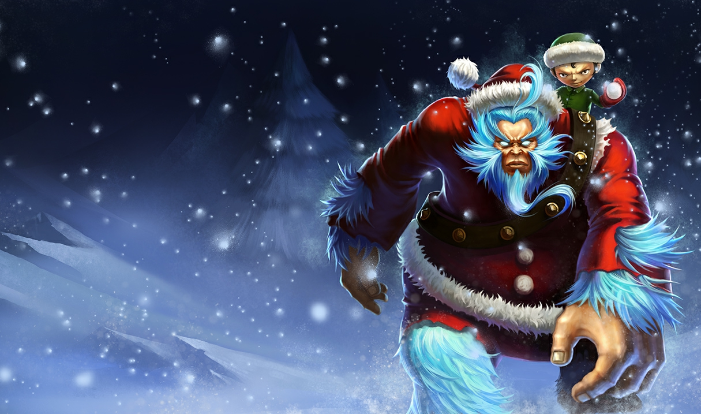
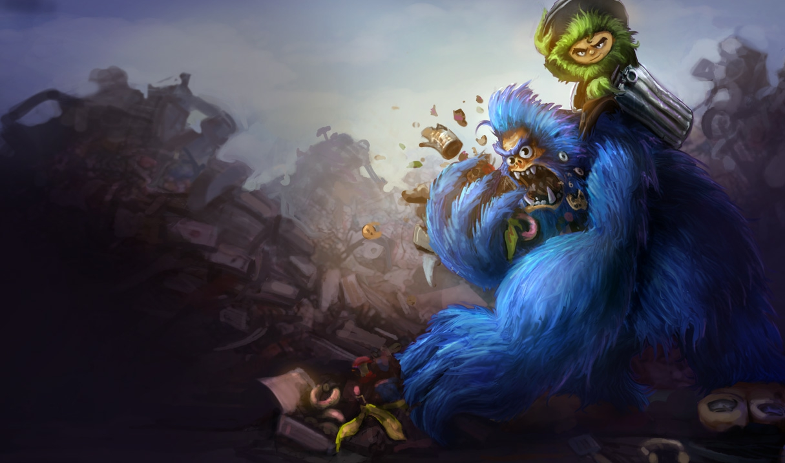
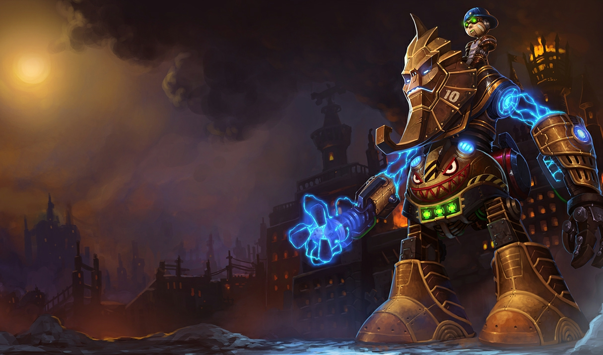
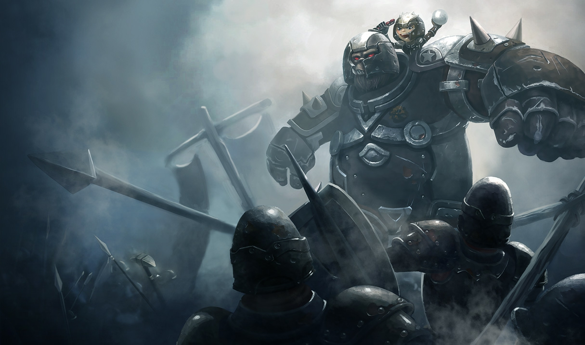
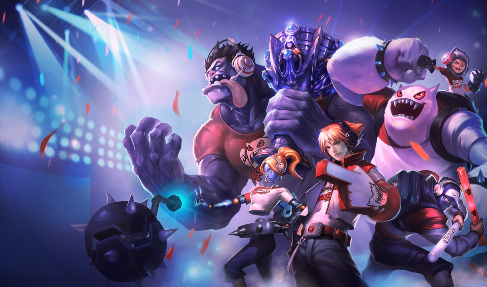

Nunu
El Jinete de Yetis
Vida: 590 (+90 por nivel)
Daño de ataque: 67 (+4 por nivel)
Velocidad de ataque: 0.625 (+2.25% por nivel)
Velocidad de movimiento: 345
Regeneracion de vida: 5 (+0.8 por nivel)
Armadura: 28 (+3.5 por nivel)
Resistencia Magica: 32.1 (+1.25 por nivel)
Historia
Aveces ocurre que los lazos de la amistad son más fuertes que los de la sangre. Cuando esos lazos atan a un niño temerario con un Yeti temible, el vínculo se convierte en una fuerza que no se puede ignorar. Al recibir la responsabilidad de domar a una bestia terrorífica, Nunu forjó una amistad donde otros habrían forjado cadenas. Ahora Nunu y su compañero Willump forman una pareja inseparable que combina la exuberancia de la juventud y la fuerza bruta con los poderes míticos del Yeti para superar obstáculos que a una pareja corriente le serían imposibles.
Nunu conserva recuerdos muy vagos de sus padres o de la época en la que formaba parte de la tribu Guardia de Hielo. Nunca fue bien recibido entre sus cuidadores. Su espíritu viajero y su compasión lo enfrentaban a menudo con los ancianos de la tribu, y muchas veces soñaba con lugares más allá de la sombra de la ciudadela de la Guardia de Hielo. A veces, para frustración de sus cuidadores, hacía algo más que soñar. El mejor ejemplo de ello se produjo cuando se convirtió en aprendiz del domador de la tribu y se hizo cargo de las criaturas.
La Guardia de Hielo tenía a su disposición una reserva de animales salvajes de Freljord, entre los que destacaba por encima de todos el Yeti, una criatura extraordinaria, dotada de cualidades místicas y fuerza bruta. El domador le enseñó a Nunu que para controlarla no había otro medio que una dieta de plantas y latigazos, pero cuanto más tiempo pasaba Nunu con la criatura, más comprendía que el Yeti no era un monstruo salvaje.
Al ver que su nuevo amigo Willump estaba cada día más débil y enfermo, comenzó a robar restos de carne para el Yeti con la esperanza de que recobrara la salud. Día tras día, Willump se fue haciendo más fuerte pero no por ello más salvaje, tal como afirmaba el domador. Nunu tenía la esperanza de convencerlo de que no era un peligro, pero las cosas no saldrían así. La siguiente vez que Nunu fue a llevarle la comida a Willump, vio que la jaula del Yeti estaba hecha añicos y solo un garabato en su interior marcaba el adiós del Yeti. Sin dudarlo un instante, Nunu se adentró en el bosque para buscar a su amigo.
Cuando por fin alcanzó a Willump, vio que el domador y un grupo de guerreros de la Guardia de Hielo habían arrinconado al Yeti. Temiendo que los hombres hirieran a su amigo, Nunu se interpuso entre el Yeti y el látigo pero el hombre no detuvo su mano. El domador preparó el látigo de nuevo y entonces el Yeti hizo gala de una furia excepcional. A pesar de todo el maltrato que había recibido, lo que provocó que Willump cruzara la raya no fue la preocupación por él mismo sino por el chico que le había tratado tan bien. El Yeti montó en cólera y dejó al hombre sangrando sobre la nieve.
El resto de guerreros de la Guardia de Hielo, aterrorizados por la fiereza de Willump, huyeron. Nunu se dio cuenta de que no habia marcha atrás. Gritó al Yeti que se fuera antes de que los hombres volvieran para acabar con él, pero el Yeti se negaba a abandonar al chico. Nunu tuvo que tomar una difícil decisión: abandonar a su único amigo y llevar una vida de cautividad en la Guardia de Hielo, o bien lanzarse a lo desconocido y adentrarse en los peligrosos terrenos salvajes de esas tierras, dejando atrás el único hogar que conocía. Dadas las circunstancias, solo había una elección posible. Al saltar a lomos del poderoso Yeti, Nunu se unió a Willump en su huida y así la pareja se adentró por primera vez en un inmenso mundo del que les habían privado hasta entonces.
Aspectos
    

Habilidades
Visionario
Tras asestar 5 ataques, el siguiente hechizo de Nunu no cuesta maná y está potenciado, lo que provoca que cause los efectos de su siguiente nivel.
Voracidad
Nunu ordena al yeti que muerda a un súbdito o monstruo, infligiéndole un gran daño y restaurando su propia vida.Nunu ordena al yeti que muerda a un súbdito o un monstruo. El objetivo sufre 340/500/660/820/980 de daño verdadero y Nunu se cura 50/100/150/200/250 (+75% Poder de Habilidad).
Pasiva - Alimenta al yeti: Por cada monstruo gigante o épico mordido por el yeti, Nunu obtiene 1/2/3/4/5 (+5% Poder de Habilidad) de daño mágico al golpear, un [object Object]% de vida máxima, su tamaño aumenta y también recibe 10 de velocidad de movimiento fuera de combate durante los siguientes 0 s (máximo 5 acumulaciones).Los monstruos devorados recientemente no otorgan bonificaciones adicionales (60 s de enfriamiento).

Frenesí
Nunu se refuerza a sí mismo y a una unidad aliada calentando su sangre, lo que aumenta su velocidad de ataque, su velocidad de movimiento y su poder de habilidad.
El calor de la sangre de Nunu y de un aliado aumenta, lo que incrementa un 40% el poder de habilidad (máximo: 40/60/80/100/120), un 8/9/10/11/12% la velocidad de movimiento y un 25/30/35/40/45% la velocidad de ataque durante 12 s.Si Nunu lo lanza sobre sí mismo, Frenesí selecciona como objetivo al campeón aliado más cercano.
Explosión glacial
Nunu lanza una bola de hielo contra una unidad enemiga, infligiendo daño y reduciendo su velocidad de movimiento y su velocidad de ataque temporalmente.
Nunu lanza una bola de hielo contra una unidad enemiga, que recibe 80/120/160/200/240 (+90% Poder de Habilidad) de daño mágico y ve reducida en un 40/45/50/55/60% su velocidad de movimiento y en un 25% su velocidad de ataque durante 2 s.
Cero Absoluto
Nunu comienza a absorber el calor de la zona, de forma que reduce la velocidad de todos los enemigos cercanos. Cuando Cero absoluto acaba, inflige daño masivo a todos los enemigos de la zona.
Nunu puede concentrar su energía durante 3 s, de forma que absorbe el calor de la zona. Las unidades enemigas ven reducida su velocidad de movimiento un 50% y su velocidad de ataque un 25%. La reducción de la velocidad de movimiento aumenta hasta un 95% mientras Nunu carga su habilidad.
Al desencadenar su energía concentrada como Cero Absoluto, los enemigos alcanzados en la zona reciben hasta 625/875/1125 (+250% Poder de Habilidad) de daño mágico, según el tiempo que haya durado la concentración de energía (daño mínimo: 0).